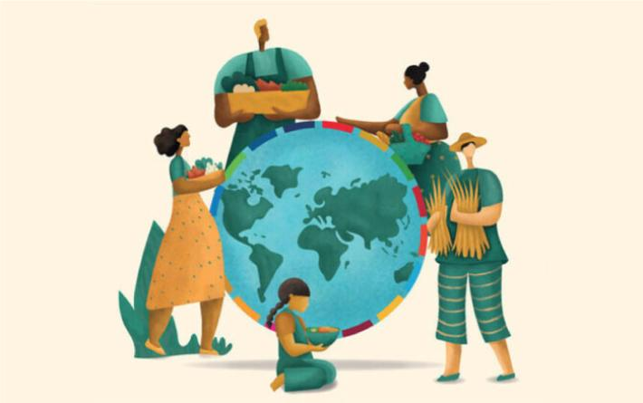

STOP FOOD LOSS AND WASTE.
FOR THE PEOPLE.
FOR THE PLANET.
If you can't feed a hundred people, then feed just one.
- Mother Teresa
What is food waste?
Food waste, or food loss, is “food that is wasted, lost or uneaten”, which occurs at all
stages of the food supply chain, including production, processing, transport, retailing, storage and
consumption
In fact, looking at the journey of 100 potatoes from the field to the plate, only 25 of which are
actually eaten by consumers. The remainder are damaged or wasted on the field, in storage,
during packaging and transportation, in the kitchen and on consumer plates.
Raising awareness about food waste and the pressure it puts on resources such as water usage and
livestock farming,
is crucial if we are to decrease the carbon impact.
What causes excessive food waste?
From purchasing too much and wrongly storing or handling food, to complying with food safety policies
during processing or preparation,
there are a number of reasons why food might go to waste. Here are the top causes:
In fact, looking at the journey of 100 potatoes from the field to the plate, only 25 of which are
actually eaten by consumers. The remainder are damaged or wasted on the field, in storage,
during packaging and transportation, in the kitchen and on consumer plates.
Raising awareness about food waste and the pressure it puts on resources such as water usage and
livestock farming,
is crucial if we are to decrease the carbon impact.